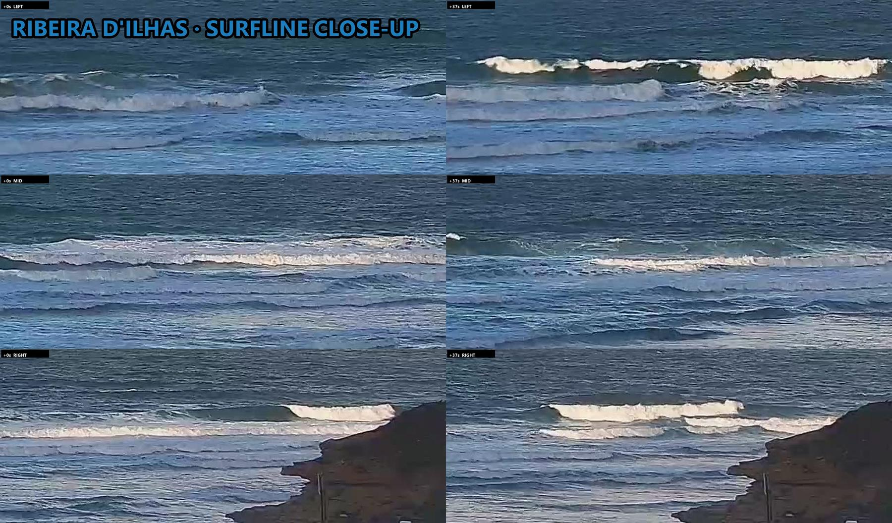
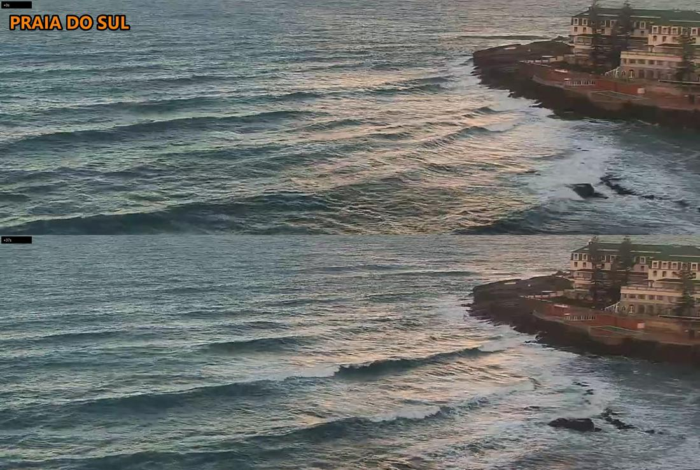
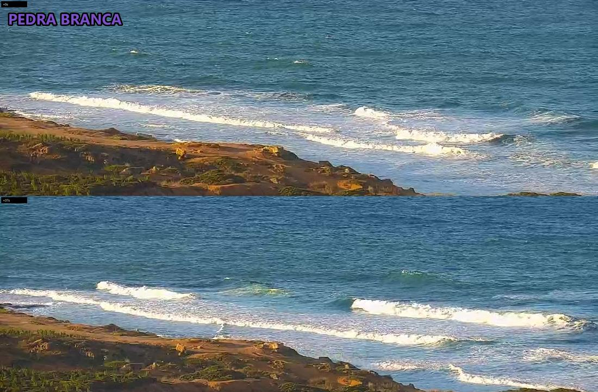
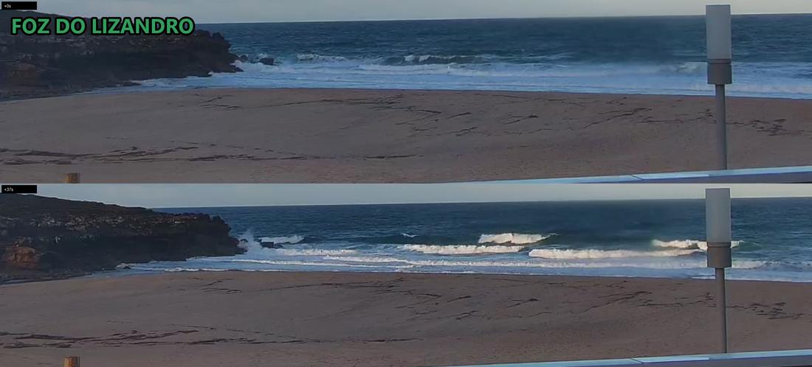

1.2–1.8m★½🤔 Marginal🏄 Quiet
1.2–1.8m★💤 Skip
liveoffline
| Ribeira | ★½ | 1.2-1.8m | lumpy sections | +½★ | 2+ quiet | |
|---|---|---|---|---|---|---|
| Norte | ★ | 1.2-1.8m | ||||
| Sul | ★ | 1.2-1.8m | choppy, weak lines | 0 | ||
| Pedra | ★ | 1.2-1.5m | crumbly whitewater | 0 | ||
| Lizandro | ★ | 1.2-1.5m | closeouts on sand | 0 |
| Ribeira | ★½ | 1.2-1.8m | |
|---|---|---|---|
| Norte | ★ | 1.2-1.8m | |
| Sul | ★ | 1.2-1.8m | |
| Pedra | ★ | 1.2-1.5m | |
| Lizandro | ★ | 1.2-1.5m |
| Ribeira | lumpy sections | +½★ | 2+ quiet |
|---|---|---|---|
| Sul | choppy, weak lines | 0 | |
| Pedra | crumbly whitewater | 0 | |
| Lizandro | closeouts on sand | 0 |
Wave size & rating: surf-forecast.com Ribeira >>
1.2–1.8m★½🤔 Marginal🏄 Quiet
1.2–1.8m★💤 Skip
1.2–1.8m★½🤔 Marginal🏄 Quiet
1.2–1.8m★💤 Skip
1.2–1.8m★½🤔 Marginal🏄 Quiet
1.2–1.8m★💤 Skip
1.2–1.8m★💤 Skip
1.2–1.8m★💤 Skip
1.2–1.8m★💤 Skip
1.2–1.8m★💤 Skip
1.2–1.8m★💤 Skip
1.2–1.8m★💤 Skip
1.2–1.5m★💤 Skip
1.2–1.5m★💤 Skip
1.2–1.5m★💤 Skip
1.2–1.5m★💤 Skip
1.2–1.5m★forecast💤 Skip
1.2–1.5m★💤 Skip
1.2–1.5m★💤 Skip
1.2–1.5m★💤 Skip
1.2–1.5m★💤 Skip
1.2–1.5m★💤 Skip
1.2–1.5m★💤 Skip
1.2–1.8m★forecast💤 Skip
1.2–1.5m★forecast💤 Skip
1.2–1.8m★½🤔 Marginal🏄 Quiet
2 surfers
onshore lumpy sections; close-up L0 M0 R0 / L0 M0 R0, wide crops show ~2 sitting outside -> ~2

1.2–1.8m★💤 Skip
0 surfers
wind-chopped weak lines, barely breaking off the rocks; detail crop readable; 0 out

1.2–1.5m★💤 Skip
0 surfers
crumbly whitewater closing on the inside; detail readable; 0 out

1.2–1.5m★💤 Skip
0 surfers
onshore closeouts on the sand, beach empty; 0 out

| When | Ribeira | Norte | Sul | Pedra | Lizandro |
|---|---|---|---|---|---|
| 2026-11-14 08:15sunrise | POOR2 | POOR— | POOR0 | POOR0 | POOR0 |
| 2026-11-13 16:41dusk | POOR0 | POOR— | POOR0 | POOR0 | POOR0 |
| 2026-11-13 15:41afternoon | POOR0 | POOR— | POOR0 | POOR0 | POOR0 |
| 2026-11-13 13:41lunch | POOR0 | POOR— | POOR0 | POOR0 | POOR0 |
| 2026-11-13 11:41morning | POOR0 | POOR— | POOR0 | POOR— | POOR0 |
| 2026-11-13 07:41sunrise | POOR0 | POOR— | POOR0 | POOR0 | POOR0 |
| 2026-11-12 16:41dusk | POOR— | VERY-POOR— | VERY-POOR2 | POOR0 | POOR0 |
| 2026-11-12 15:41sunset | POOR0 | VERY-POOR— | VERY-POOR0 | POOR0 | POOR0 |